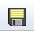

After you search the first time, the search pane collapses under an orange bar so the results of your search can be displayed. To search again, just click on the bar to reopen the search pane.
Position Search
To perform a position search, enter the coordinates of your central position and the radius of the cone (circle) within which you want to see Planck results. All observations meeting your entered criteria that are within the specified radius will be returned. Alternatively, you may enter a target name and have either NED or SIMBAD resolve the name into coordinates. These coordinates can be in decimal degrees or in hh:mm:ss dd:mm:ss format.To enter a search radius, type in the number and select the units --- arcseconds, arcminutes, or degrees --- from the pulldown menu. The position search can also be done in "batch mode", using a list of positions supplied in a file. The file must be in IPAC table format, which is basically ASCII text with headers explaining the type of data in each column, separated by vertical bars. IRSA's TblCheck tool will validate your input file and convert many types of standard ASCII files to IPAC table format. A sample input file looks like this:
| ra| dec| | double| double| | deg| deg| 266.461876096161 -28.9303475510113 317.385694084404 -41.1537816217576 267.210580557307 -27.7929408211594 229.172700517754 0.2598861324350 299.510225672473 -38.7735055243326 213.945501950887 13.3596597685085 262.341432853080 -23.7518928284717 271.202769466020 -21.7274227022229 291.167629785682 -29.2569222675305 272.336516119634 -20.2761650442889 237.391628608612 2.5906013137112
The NPA parses on spaces, so a space is the delimiter between fields. Therefore, if there is a space in your object name (e.g., "NGC 1001" versus "NGC1001") or position ("34.23 45.45" versus "34d23m45.45s"), you need to put quotes (single or double) around the target name or its position. Entering positions provides information about the acceptable format for entering position information.
Single Wavelength (all-sky)
Instead of searching by individual positions, you may also view the all-sky Planck catalog for each frequency band. The bands range from 30 GHz to 857 GHz and can be selected with the pull-down menu. Content filtering on the all-sky catalog columns can be performed by clicking on the "Set Column Selections and Filters" link. This pops up a window in which you can select either the short or the long form for the catalog display (long form has more columns), select the individual columns to be displayed, and set constraints on individual column values (see Filtering for more information).Understanding Your Search Results from the NASA Planck Archive
This page is an overview of what exactly is returned by the NASA Planck Archive (NPA) search. It explains some of the terminology the NPA uses and describes some of the common tasks you may want to do (including how to download data). It then discusses the individual tabs on the archive screen, as well as how to further refine search results by using filters.
Contents:
+Common Options
+Details
+Visualization
+Filtering -- Imposing additional filters to get the
most out of your search results
Common Options
- Downloading Data
- In order to download Planck, WMAP, or IRAS images, click
on the checkbox to the left of
the entry you want to download, and then click on the "Prepare
Download" button at the top of the column. The Background Monitor is then launched to
prepare your data for download. When your packaged data are ready,
save your data to disk using the features of your browser.
Note that you control where the data are saved on your disk through your browser; your browser may be configured to store all downloads in a particular location on your disk.
- Saving the results
- The search results can be saved to a
text file by clicking the "Save" button or viewed as a text file
(fixed font, no html columns) by clicking the "Text View" button.
Clicking "Text View" again returns to html formatting.
- Filtering
- Filters can be added interactively -- see Filtering below for more information.
- Adding/removing columns
- Several columns come up in each of these tabs by default, and they
can be added/removed by clicking on the small grid on the far upper
right of the corresponding tab's columns ().
The results can be sorted by clicking on any column's name.
- Changing the number of rows
- By default, 50 rows are returned
per page; more or fewer rows can be displayed by changing the number
in the bottom center of the pane. You can scroll through pages by the
arrows on the bottom left and see how many rows there are via
the count on the bottom right.
If you have more rows/more data than you want, you can
further restrict the search by imposing additional
filtering (see below).
- Changing the size of the window or columns
- You can click and drag to resize the window pane or individual
columns.
- Changing the sort order
- Clicking on the name of a column will sort the table by that column.
Details
After a positional search, the top portion of your NPA window will, by default, contain eleven tabs: one for each of the nine Planck frequency ranges and two for the catalogs based on multifrequency detection algorithms of the Early Release (ESZ, ECC). You should make the browser wide enough to see all the 11 different tabs in the result panel. You can also drag the little light blue triangle to adjust the widths of the panels.Clicking each tab reveals the table of Planck sources for that frequency band within the designated search zone. The ESZ and ECC tabs show the catalog entries for the Early Release SZ clusters (ESZ) and Cold Cores in the same regions, since the image size is set at four times the beam FWHM at each wavelength. The images displayed in the lower portion of the NPA window will change depending on which source is selected. The selected source is highlighted in green in the table of search results.
You can find the full description of the columns present in the ERCSC single band catalogs, the ECC, and the ESZ in the ERCSC Explanatory Supplement You can also find most of the descriptions at 30,44,70GHz Column Descriptions and 857GHz Column Descriptions. The others are:
- clon, clat
- RA, DEC in sexigesimal
- iras100_bg
- IRAS 100 micron background in MegaJy/sr
- dist
- distance in arcsec between the input coordinate and the ERCSC source
- angle
- position angle of separation in degrees East of North
Following the positional search, Planck images of the selected entry in the search results table will be displayed in the lower portion of the NPA window. The entry highlighted in green is centered in each wavelength image field of view. Note that the factor of 7 resolution change between 30 and 857 GHz will result in different sized "postage stamp" images around individual sources since the image size is set at four times the beam FWHM at each wavelength. WMAP and IRAS images are also shown for each table entry.
Filtering -- Imposing additional filters to get the most out of your search results
In order to quickly sort through what information appears in the results tab and to examine the source you care about, filters are a very powerful tool.To add a new filter, click on "Add filters". Each of the columns currently displayed can be selected in a pulldown menu, and a selection operation performed on the entries in the column. If you select a field with a limited set of choices, an additional pulldown appears with those limited choices.
For example, if you have searched on a position and would like to view only the Planck sources with more than 3 observations, select 'numobs', '>' from the relevant pulldown menu, enter '3' in the text box, then "ADD" the filter and "APPLY" it to your search results. The screen will then display only the objects at the position you specified which have been observed more than 3 times. To remind you that a filter has been applied to the results, a notice is displayed on the top right of the search results pane. Note that each tab (that is, each of the nine Planck frequencies plus ESZ and ECC) has its own, independent filter. If you want to see the objects with more than 3 observations in 30 GHz, 44 GHz, and 857 GHz, you'll need to apply the filter three different times. You can add additional filters to further restrict your list of sources.
The Details Pane: Getting More Information on a Row In Your Search Results from the NASA Planck Archive
After you have searched the archive and explored the tabs in your search results, you will be interested in understanding the additional information that appears in the Details pane on the right side of your screen when a row in the table (for any tab) is highlighted.The contents of the Details pane change according to which tab you have in the foreground.
From the tab, click on any row (note: no need to select the checkbox on the far left of the row). The row becomes highlighted in green. The details pane on the right side of the window changes accordingly.
The Details tab that appears contains notes about the selected source. This typically states association between an ERCSC source and a source detected in other catalogs, such as WMAP, GB6 or IRAS.
Visualizing data in the NASA Planck Archive
Once a search is complete, the lower portion of the NPA window is populated with three rows of images. The top row consists of Planck images from each frequency band, with frequency increasing from left to right. These images appear as a grey background and contain a mosaic of JPEG images for all the Planck sources found within this zone. The mosaics are constructed from maps with a model for the cosmic microwave background subtracted. The individual "postage stamp" Planck JPEGs are each four times the beam FWHM on a side at 33 GHz. However , for each source, data is included only for a region corresponding to four times the beam FWHM at the corresponding frequency. Thus, those regions with data in the postage stamps will vary in size by a factor of 7 between 30 and 857 GHz. The Planck images can be downloaded by selecting Planck sources from the search results table, clicking the "Prepare Download" button, and making sure that the "Planck" box is checked in the list of cutout images to download. They cannot be further manipulated inside the NPA, however.Below the row of Planck mosaics, there are two additional rows of images showing the search region as seen by WMAP and IRAS. These images contain markers showing the positions of Planck catalog sources from the frequency range selected. Unlike the Planck images, the WMAP and IRAS images are FITS files, and clicking on the images will launch the FITS viewer described below. These images can also be downloaded to your computer (as described previously) by ensuring that the WMAP and IRAS boxes are checked in the "Download Options" window that pops up after selecting "Prepare Download".
Viewer
All of the interactive image visualization tools work the same way. Here we describe the FITS image viewer; we describe the visualization tools and their options below. Note that the viewer only works for FITS files. Since the Planck images are JPEGs, they can't be used with the viewer.Note also that you may need to expand your browser window to see all the results.
- Interactive exploration of the image with the mouse.
- Move your
mouse over any image that is loaded into the viewer. A pop-up
window appears, and some information is updated in real time (such as
coordinates); some information (such as flux densities) is updated
when you stop moving your mouse for a second or two. The image can be
interactively investigated in this fashion.
- Finding out what image is displayed.
- The top of the window pane (just under the tab headings) gives a
title of the image. This abbreviation may be a little cryptic;
ISSA or IRIS are both IRAS data, along with the corresponding wavelength;
WMAP cutouts give the band name as well as the band frequency.
- Breaking the image out of the pane.
- This icon will pull the corresponding visualization window out into a
pop-up window. This enables you to look at more than one
visualization window at a time.
Visualization Tools
When you click on the image (or the header of the image, the "Visualization Tools" toolbar pops-up. Here's a description of the tools.-  Saving the FITS file.
- The diskette icon will download the current background FITS image
to your local disk. Note that you control where the image is
saved on your disk through your browser; your browser may be
configured to store all downloads in a particular location on your
disk.
- Changing the color table.
- Click on the colorful icon to change the color table of the
background image. A wide variety of color table choices appear when
you click the button, and you can select your new color table.
For the IRAS and WMAP cutouts, we use the color table
"For false color", 5th from the top in color tables.
Here is the detailed explanation of that default color table: Starting with black, fade up in blue to index 68. At index 17 start to fade in green along with the blue. At index 68 continue fading up the green while fading the blue down. At index 102 start fading in red while continuing to fade out blue. Continue to fade up red until index 187 - at this point, green is almost gone and blue is completely gone. At index 204 it is red only. From index 204 fade in both green and blue until all three colors are on full at index 255.
- Changing the color table stretch.
- Click on this icon to change the specific stretch of the color table
to one of several pre-defined standard options.
- Customizing the color table stretch.
- Click on this icon to customize the specific stretch of the color
table. A pop-up window appears with a histogram of the colors, and
you can interactively change and customize the stretch of the data as
displayed.
 Viewing the FITS header.
Viewing the FITS header.
- This icon will display a pop-up window with the FITS header of the background image.
- Viewing/changing the order of the layers on the image.
- If you've been following along by trying these various
options, you now have an image with a lot of annotations on it. If you
click this icon, you will get a pop-up window with a list of all the
layers you have on top of the image. Here you can change what is
displayed and what colors get used for it.
- This is not actually clickable, but is instead letting you know
the magnification factor for the image as displayed. To zoom, use the
zoom icons: a magnifying glass with plus or minus sign inside. These are
described elsewhere in this help document. Note that there is a maximum
zoom allowed -- 64 times. To enlarge things more than that, please select another
background image, one of smaller spatial extent.
 Getting help.
Getting help.
- Clicking on this icon
takes you to this help page.
 Locking or changing the background
image.
Locking or changing the background
image.
- You can lock the background image or change it to be
something else by clicking on this image.
 Zooming in or out.
Zooming in or out. -
Clicking on these magnifying glass icons zooms you in or out of the
image (or spectrum). The readout of how many times you are zoomed
appears at the top of the visualization window. Note that there is a
maximum zoom allowed -- 64 times. To enlarge things more than that,
please select another background image, one of smaller spatial
extent.
- Adding a coordinate grid.
- Click on this
icon to overlay a coordinate grid on the image. Click it again to
remove it.
 Selecting a region.
Selecting a region.
- When you
click this icon, at first, nothing seems to happen. However, you can
now click and drag in the image, selecting a box on the image. This
box can be resized by grabbing and dragging the corners of the box.
When you have selected a region of the image, additional icons appear
above the image. These icons will allow you to crop the image to the
selected region (
 ) or obtain statistics on the
region (
) or obtain statistics on the
region ( ).
). - Rotating the image so that North is up.
- Images that you download from IRAS or DSS or 2MASS commonly
are already oriented such that North is up. However, when
interactively investigating Planck products, North is not necessarily
up. The Planck images and mosaics are constructed to optimize the
resultant size of the mosaic. However, when interactively
investigating the image, it may be helpful to orient North up, and
this icon does that.
 Measuring a distance.
Measuring a distance.
- When you
click this icon, at first, nothing seems to happen. However, you can
now "draw" a line on the image, and the length of the line is
displayed.
- Center image.
- When you click this icon,
the image will be centered at the current
query position.
Create Account
Select this option to create a new account.Find this option by selecting "Sign in" in the far top right of the NPA page, and then "Create an account" appears as an option in the lower left of the pop-up window.
Sign In
Select this option to log in if you know your password.The "sign in" link is in the far top right of the NPA page.
Forgot your Username or Password?
If you do not remember your username or password, select this option to retrieve this lost information.Find this option by selecting "Sign in" on the far top right of the NPA page; a link labeled "Forgot your Username or Password?" will appear on the login screen. Click the link, then enter the email address you used when you registered. Your password will be reset and the new password mailed to you.
Change Password
Select this option to change your password on an existing account.Find this option by logging in via the "Sign in" link on the far top right of the NPA page, then clicking on "Profile" that appears near where the "Sign in" link used to be. Then select "change password" from the left side of the pop-up window that appears.
NASA Planck Archive: Notice to Users -- Privacy Notice
The Planck Telescope is an ESA/NASA mission managed by the European Space Agency (ESA). NASA Planck data are managed by the NASA/IPAC Infrared Science Archive, which is is an archive of images, catalogs, and spectra from NASA missions, managed by the Jet Propulsion Laboratory. This Web site is maintained by the Infrared Processing and Analysis Center (IPAC), located on the campus of the California Institute of Technology (Caltech).The information you provide on a Caltech Web site will be used only for its intended purpose. We will protect your information consistent with the principles of the Privacy Act, the e-Government act of 2002, the Federal Records Act and, as applicable, the Freedom of Information Act. This notice is posted pursuant to the California Online Privacy Protection Act of 2003 (Cal Bus & Prof Code Sections 22575-22579).
Submitting information is strictly voluntary. By doing so, you are giving Caltech your permission to use the information for the intended purpose. In addition, Caltech may also furnish this information to NASA at NASA's request. If you do not want to give Caltech permission to use your information, simply do not provide it. However, not providing certain information may result in Caltech's inability to provide you with the information or services you desire.
Caltech never collects information for commercial marketing. We will only share your information with a government agency if it relates to that agency, or as otherwise required by law. Caltech/JPL never creates individual profiles or gives your information to any private organization.
We collect no personal information about you when you visit this Web site, unless otherwise stated or unless you choose to provide this information to us. However, we collect and store certain information automatically for use in site management and security purposes. What we collect and store automatically in terms of site statistics is:
- The Internet Protocol (IP) address for the domain from which you access the Internet (e.g., 123.456.789.012) whether the domain is yours individually or is provided as a proxy by your Internet Service Provider (ISP)
- The date and time you access our site
- The pages you access (recorded by the text and graphics files that compose that page)
- The Internet address of the Web site from which you linked directly to our site.
We use the summary statistics to help us make our site more useful to visitors, such as assessing what information is of most and least interest to visitors, and for other purposes such as determining the site's technical design specifications and identifying system performance or problem areas.
The Web site also collects and stores information about your search options, such as
- Name resolver choice (NED/SIMBAD)
- Page size (number of rows)
- Which search results (tabs) should be displayed
- Email address, if provided, for email notifications
- Plus, additional preferences that may be developed in the future, such as those tied to the visualization options.
At no time is your private information, whether stored in persistent cookies or elsewhere, shared with third parties who have no right to that information. If you do not wish to have session or persistent cookies stored on your machine, you can turn them off in your browser. However, this may affect the functioning of the Web site on your computer.
IPAC will protect all such information consistent with applicable law.
Comments Sent by E-mail
You may choose to provide us with personal information, as in an e-mail containing your comments or questions. We use this information to improve our service to you or to respond to your request. There may be times when your message is forwarded, as e-mail, to other IPAC employees who may be better able to help you. We normally do not share our e-mail with any other outside organizations, unless determined necessary for security purposes or when required by law. Remember that email isn't necessarily secure. You should never send sensitive or personal information like your Social Security number in an email. Use postal mail or secure Web sites instead.
Security Notice IPAC is part of the Division of Physics, Mathematics and Astronomy at the California Institute of Technology ("Caltech"), and operates this Web site as part of a federally funded computer system used to accomplish Federal functions. Unauthorized attempts to defeat or circumvent security features, to use the system for other than its intended purposes, to deny service to authorized users, to access, obtain, alter, damage, or destroy information, or otherwise to interfere with the system or its operation is prohibited. Evidence of such acts may be disclosed to law enforcement authorities and may result in criminal prosecution under the Computer Fraud and Abuse Act of 1986 and the National Information Infrastructure Protection Act of 1996, codified at section 1030 of Title 18 of the United States Code, or other applicable criminal laws.
IPAC uses software programs to monitor this Web site for security purposes to ensure it remains available to all users and to protect information in the system. Any and all uses of this system and all files on this system may be intercepted, monitored, recorded, copied, audited, inspected, and disclosed to authorized Caltech, JPL, NASA, law enforcement personnel, as well as authorized officials of other agencies. By accessing this Web site, you are expressly consenting to such interception, monitoring, recording, copying, auditing, inspection and disclosure at the discretion of Caltech or NASA. Users have no explicit or implicit expectation of privacy.
Disclaimers
Disclaimer of Liability
With respect to documents available from this server, neither Caltech, nor the United States Government, nor any of their employees, makes any warranty, express or implied, including the warranties of merchantability and fitness for a particular purpose, or assumes any legal liability or responsibility for the accuracy, completeness, or usefulness of any information, apparatus, product, or process disclosed, or represents that its use would not infringe privately owned rights.
Disclaimer of Endorsement
Reference herein to any specific commercial products, process, or service by trade name, trademark, manufacturer, or otherwise, does not necessarily constitute or imply its endorsement, recommendation, or favoring by Caltech or the United States Government. The views and opinions of authors expressed herein do not necessarily state or reflect those of Caltech or the United States Government, and shall not be used for advertising or product endorsement purposes.
Copyright Status
For information on possible copyright infringement, please visit Caltech's "Copyright Infringement" page.